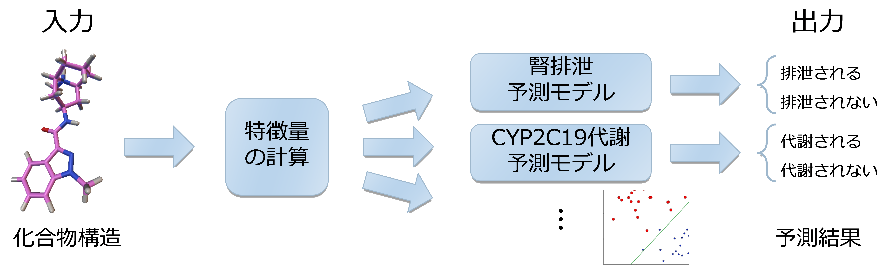

Under construction
Tools
Spresso (http://www.bi.cs.titech.ac.jp/spresso/)
Spresso can screen vast number of compound based on protein tertiary structure. Spresso stands for Speedy PRE-Screening method with Segmented cOmpounds and is pronounced like “espresso”.
Research
compound pre-screening before structure-based virtual screening
In order to reduce computational cost of structure-based virtual screening (virtual screening based on protein tertiary structure), pre-screening of compound database is common methodology. We develop an ultrafast structure-based pre-screening method based on compound decomposition, named Spresso.

- Keisuke Yanagisawa, Shunta Komine, Shogo D. Suzuki, Masahito Ohue, Takashi Ishida, Yutaka Akiyama: “ESPRESSO: An ultrafast compound pre-screening method based on compound decomposition”, The 27th International Conference on Genome Informatics (GIW 2016), 2016/10 (Full Paper, Oral Presentation)
Drug clearance pathway prediction using semi-supervised learning
薬物化合物の分子量 (MW)、分配係数 (logD)、血漿中タンパク質非結合率 (fup)などを計算し、これらの値を利用してヒト体内のどのような代謝・排泄経路（クリアランス経路）を通過するかを予測します。

この予測問題は「ラベル付け（クリアランス実験）のコストが非常に高く、ラベル付けされていない化合物構造は大量に存在している」という性質を持っています。 したがって、一般によく用いられる教師付き学習ではなく、ラベル付けされていないデータも利用することの出来る半教師付き学習が予測に適していると考えられます。

- Keisuke Yanagisawa, Takashi Ishida, Yutaka Akiyama: “Drug clearance pathway prediction based on semi-supervised learning”, IPSJ Transactions on Bioinformatics, 8: 21-27, 2015/8 [open access]